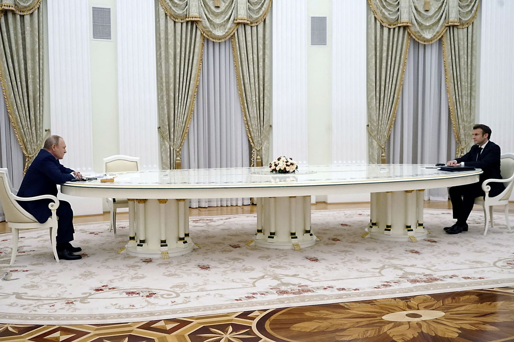
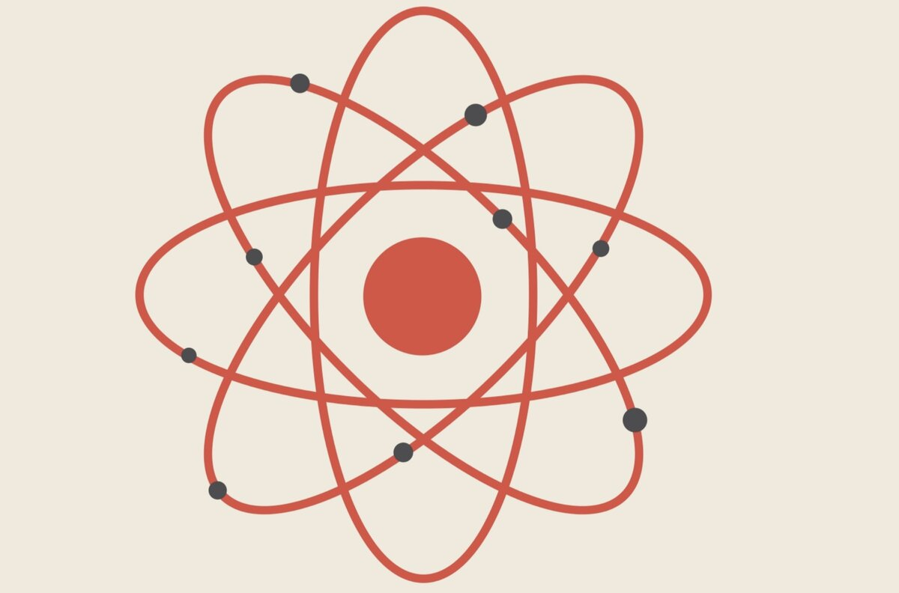

Дипломатическая победа: как договороспособность позволяет вертеться в менеджменте
Дипломатическая победа: как договороспособность позволяет вертеться в менеджменте
Андрей Смирнов
@itsmirnov
Дисклеймер
🙊 Моё личное мнение
🤷🏻 Основанное на собственном опыте
Что представляете, когда слышите слово «переговоры»?
Переговоры
Переговоры

Переговоры
NLP
Манипуляции
Шевели пальцами
Любой наш разговор –
это уже переговоры
Переговоры
Обсуждаем планы с друзьями
Распределяем обязанности с партнёром
Ведём диалог с коллегами на работе
И даже пытаемся договориться с собой
Что почти не возможно
А раз из них состоит всё

Почему бы не изучить, как этот инструмент работает?
Переговоры, как любой софт скилл, влияет на развитие других софтов
Выгоды переговоров
Укрепление лидерских качеств
Увеличение эффективности команды
Обеспечение стратегических преимуществ
Снижение риска и стрессовых ситуаций
Развитие гибкости и адаптивности
Основные принципы ведения переговоров
Переговоры – это
НЕ уступки
НЕ капитуляция
НЕ подстраивание
НЕ компромисс
Цель переговоров
Сделка на равных условиях
Приблизиться максимально к тому, что вам нужно
Выяснить, чего хочет противоположная сторона
Логика аргументации и стратегии ведения переговоров
Строить убедительные доводы и ясно изложить свою позицию
Сохранить позицию и добиваться выгодных результатов
Ключевые информационные моменты переговоров
ваше первое предложение
первый ответ другой стороны
ваше последнее предложение
последний ответ другой стороны
Устойчивость в спорах
Жесткость > Мягкость
Минимизируйте демонстрацию эмоций
Белая, серая и черная зоны
Манипулятивные техники
Использование времени
Давление на эмоции
Другие приемы манипуляции
Можно ли защититься от этого?
Смотрите доскональнее, кто перед вами
Пытается ли человек вам понравиться?
Использует ли он свой авторитет и власть?
Зеркалирует ли он ваши повадки?
Не попадайтесь в ловушки
Не зацикливайтесь на собственной последовательности решений
Не соглашайтесь на контрастное меньшее предложение
Не ведитесь на ограниченность и конкурентность предложения
Если чувствуете, что холодный разговор превращается в эмоциональный, вами манипулируют
Разберем кейсы из реальной жизни
Увольнение тимлида с минимальными потерями для команды
Проблема: Угроза ухода всей команды при увольнении тимлида.
Решение: Продвижение тимлида на более высокую должность, что ослабляет его связь с командой и побуждает его уйти без команды.
Мотивация сотрудника через его личные интересы
Проблема: Низкая мотивация сотрудника, чьи интересы выходят за рамки основных задач.
Решение: Создание условий, которые поддерживают его мотивацию и помогают преодолеть бюрократические препятствия.
Переговоры в условиях невозможности абсолютного компромисса
Проблема: Конфликт интересов между несколькими сторонами.
Решение: Идентификация страхов и негативных сценариев для каждой стороны, и достижение компромисса через индивидуальный подход к каждому участнику.
Генри Киссинджер
Шаттл-дипломатия
Методология развития переговорных навыков
Как развить умение вести переговоры
Практика
Рефлексия
Попробуйте пойти на рынок и начать торговаться
Лучшие друзья переговорщика - это "почему" и "если, то"
Препятствия на пути к успешным переговорам
Психологические барьеры
Мотивационные проблемы
Снисходительное отношение
Почему многие менеджеры не уделяют должного внимания развитию этого навыка
Почему люди не хотят заниматься переговорами и как это изменить
Как преодолеть негативное восприятие переговоров
Как перепрошить мышление для успешных переговоров
Подготовка к переговорам
Сценарии и развилки
Чеклист для переговоров
Подготовка
Определите цель переговоров
Проанализируйте интерес другой стороны
(приоритеты и ограничения)
Подготовьте варианты решения,
устраивающие обе стороны
Начало
Установите контакт в позитивном ключе
Открыто обозначьте свою стартовую позицию
Активно используйте уточняющие вопросы
Основная часть
Внимательно слушайте и подтверждайте понимание
другой позиции
Предлагайте варианты решения, чтобы дать выбрать наиболее приемлемый
Ориентируйтесь на общие интересы, не на жёсткие позиции
Завершение
Обсудите и зафиксируйте достигнутые договоренности
Убедитесь, что обе стороны понимают условия одинаково
Определите план реализации и ответственных за выполнение договоренностей
Поблагодарите за сотрудничество в позитивном ключе
Рефлексия
Проанализируйте, что получилось хорошо, а что можно улучшить в следующий раз
Учтите выводы для подготовки к следующим переговорам
Выводы
Внедрите полученные знания на ближайших встречах
Вопросы?
@itsmirnov